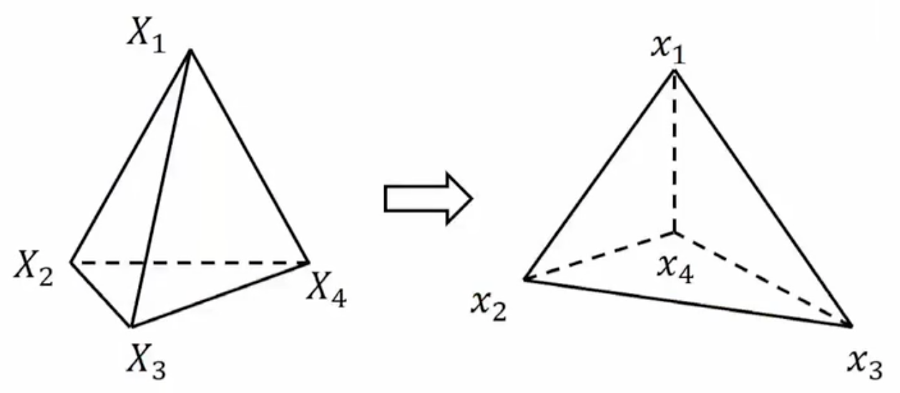

线性有限元
注意：该方法并非工程中的FEM方法
目标
- 理解图形学中线性有限元的理论部分
1. 时间离散化
省略...
2. 空间离散化
空间离散化方法：
- 弹簧质点系统
- 线性有限元
2.1 弹簧质点系统
是一种方法...(链接)
2.2 线形有限元
2.2.1 概念符号
\(\Phi - Deformation\;Map - 形变映射\)
\(F - Deformation\;Gradient - 形变梯度\)
\(\varepsilon - Deformation\;tensor - 形变张量\)
0代表没有任何形变，不等于0代表由形变
\(\Psi(\varepsilon(F)) - Energy\;Density - 能量密度\)
用张量定义的能量密度，有张量就有能量密度，没有张量就没有能量密度
可以认为是张量的平方，或者是保体积的项
\(E = \int \Psi - 对能量密度求积分\)
\(f = - \frac{\partial E}{\partial x} - 对位置求导\)
\(P - Piola-Kirchhoff\;stress\;tensor - 能量密度\Psi对形变梯度F求导\)
2.2.2 形变映射
\(x = \phi(X)\) 这里\(\phi\)映射的意思是将初始位置\(X\)映射成为当前位置\(x\)
平移映射 $$ \phi(X) = IX + t \ \ I = \left[ \begin{matrix} 1&0\ 0&1 \end{matrix} \right] $$
旋转映射 $$ \phi(X) = RX \ \ R = \left[ \displaystyle\begin{matrix} cos(\theta)&-sin(\theta)\ sin(\theta)&cos(\theta) \end{matrix} \right] $$
拉伸映射 $$ \phi(X) = SX \ \ S = \left[ \begin{matrix} 2&0\ 0&1 \end{matrix} \right] $$
微元的思路
设微元的中心为\(X^*\)，微元中的另外一点为\(X\)
对于这个接近\(X^*\)的点\(X\)，它的形变映射是什么样子？ $$ \phi(X) \approx \displaystyle\frac{\partial \phi}{\partial X}(X-X^) + \phi(X^) = \frac{\partial \phi}{\partial X} + (\phi(X^) - \frac{\partial \phi}{\partial X}X^) $$ 对\(X\)进行泰勒一介展开，然后化简成和\(X\)有关的、以及和\(X^*\)有关的部分，则 $$ \phi(X) \approx FX + t \ \ F - Deformation\;gradient - 形变梯度 $$ 也就是，在很小很小的微元范围内，形变映射可以近似为一个仿射变换。
在上面的映射变换例子中
-
平移映射的\(F\)为\(I\)单位矩阵
-
旋转映射的\(F\)为旋转矩阵\(R\) $$ F = \displaystyle\frac{\partial \phi}{\partial X} = R = \left[ \begin{matrix} cos(\theta)&-sin(\theta)\ sin(\theta)&cos(\theta) \end{matrix} \right] $$
-
拉伸映射的\(F\)为拉伸矩阵S $$ F = \displaystyle\frac{\partial \phi}{\partial X} = S = \left[ \begin{matrix} 2&0\ 0&1 \end{matrix} \right] $$
2.2.3 能量密度
公式推导：
这个公式\(\Psi(x) = \Psi(\phi(X))\)表示的意思是\(x=\phi(X)\)这个点的能量密度函数
前面根据泰勒一介展开得到的近似：\(\phi(X) \approx FX+t\)
于是，\(\Psi(x) \approx \Psi(FX+t)\)
然后，有限元的能量和平动\(t\)没有什么关系，所以\(\Psi(x) \approx \Psi(FX)\)
接着，\(X\)是一个和状态无关的量，因为定义中\(x\)代表当前位置，\(X\)代表初始位置，所以\(\Psi(x) \approx \Psi(F)\)
所以，能量密度\(\Psi(x)\)可以定义成只和形变梯度\(F\)有关的一个公式
能量密度定义：
例如：\(\Psi(F) = \displaystyle\frac{1}{2}k||F-I||_F^2\)表示的是任何非单位矩阵\(I\)作为形变梯度，都会造成能量的变化。看似很合理，但是，旋转形变也会引起能量变化，不是所期待的。
在例如：\(\Psi(F) = \displaystyle\frac{1}{2}k||F||_F^2\)表示是旋转不会产生能量，但是...
怎么描述也不够，所以需要引入一个新的量\(\varepsilon\)来描述形变，应变张量\(\varepsilon\)
应变张量定义：
\(\varepsilon(F)\)应变张量定义需要是：
- \(\varepsilon\)描述的是形变的严重程度
- \(\varepsilon(I)=0\) 表示初始状态下的应变需要为0
- \(\varepsilon(F)=\varepsilon(RF)\) 表示旋转形变不产生应变
根据这个定义，可以用给应变张量的本构模型(constitutive model)有：
- St. Venant-Kirchhoff模型：\(\varepsilon(F)=\frac{1}{2}(F^TF-I)\)
- Co-rotated线形模型：\(\varepsilon(F)=S-I, where\;F=RS\)
- 做极分解(Polar Decomposition)
- \(R\)是一个旋转矩阵
- S是一个对称矩阵
结论，能量密度可以定义成应变\(\varepsilon\)的平方
\(\Psi(\varepsilon)=\displaystyle\frac{1}{2}k||\varepsilon||_F^2\)，没有应变=没有能量；有应变=有能量
\(\Psi(\varepsilon)=\mu||\varepsilon||_F^2 + \displaystyle\frac{\lambda}{2}tr(\varepsilon)^2\) - 除了应变的平方外（保硬度的），还加了应变trace的平方（保体积的）
2.2.4 从能量密度到能量
能量等于能量密度对整个物体求积分\(E(x) = \int_{\Omega}\Psi(F)dX\)，但这是对连续空间(Continuous Space)的，需要空间离散化，即线形有限元Linear FEM
空间离散化 Spatial Discretation
有了有限元离散化以后，对连续空间的积分，则可以变成对离散空间各个Element的求。再在每个Element的内部对能量密度求积分：
\(E(x) = \sum_{e_i}\int_{\Omega_{e_i}}\Psi(F_i(x))dX = \sum_{e_i}w_i\Psi(F_i(x))\)
\(w_i = \int_{\Omega_{e_i}}dX\) 为“在这个空间中，对自己求积分，即等于这个空间（这个Element）的面积。在三维空间中，\(w_i\)则表示体积。
类似与求质量：如果密度是均质的，那么密度 x 体积 = 质量，
如果能量密度是均质的，那么能量密度 x 体积 = 能量。
2.2.5 三维线形元的例子
求形变梯度\(F\)
有两个四面体，每个四面体有四个点，从左边的状态形变到右边的状态，根据线形元的公式\(\phi(x)=FX+t\)，则有： $$ x_1=FX_1+t\qquad (1) \ x_2=FX_2+t\qquad (2) \ x_3=FX_3+t\qquad (3) \ x_4=FX_4+t\qquad (4) $$ 
为了求形变梯度\(F\)，使用\((1), (2), (3)\)式减去\((4)\)式，可以消除平动\(t\)，然后得到： $$ [x_1-x_4 \quad x_2-x_4 \quad x_3-x_4] = F[X_1-X_4 \quad X_2-X_4 \quad X_3-X_4] \ \ D_s和D_m $$ 于是，求得形变梯度为\(F=D_sD_m^{-1}\)
那么，当\(D_m\)不为0时，可以求出任何事后的形变梯度\(F\)
求形变梯度\(F\)的目的，是求能量，进而求力。
求能量密度
能量对位置的导数，力；
能量密度对位置的导数，力的密度
所以，使用链式法则求导： $$ \frac{\partial \Psi}{\partial x}=\frac{\partial F}{\partial x}:\frac{\partial \Psi}{\partial F} $$ 形变梯度对位置的导数，\(\frac{\partial F}{\partial x}\)，在2D中，是一个\((2n\times1)\times(2\times2)\)的张量，其中
- \((2n\times1)\)是位置的向量（两个n）
- 形变梯度\(F\)是一个\((2\times2)\)的矩阵
- 结果是一个\((2n\times1)\)的向量
链式求导的左边一项是： 如果位置\(x\)产生扰动，就会对形变梯度\(F\)产生扰动。形变梯度\(F\)会有什么变化？
链式求导的右边一项是：如果形变梯度\(F\)有一个扰动，能量密度\(\Psi\)会有什么变化？
这里看的是，在位置\(x\)产生非常非常小的变动的时候，能量密度是怎么变化的
上面的公式中，\(\displaystyle\frac{\partial \Psi}{\partial F}\)单独拎出来，叫做1st Piola-Kirchhoff stress tensor，PK1应力？
这个PK可以理解为，在张量空间的力是什么样的
问题
- 工程中的FEM区别？
- 把代码也拎进来